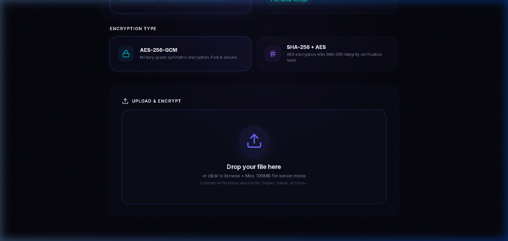
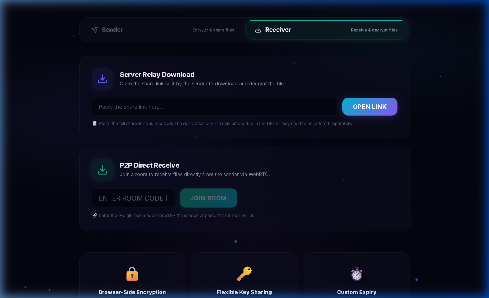
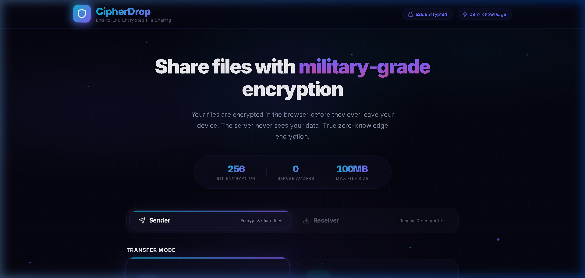
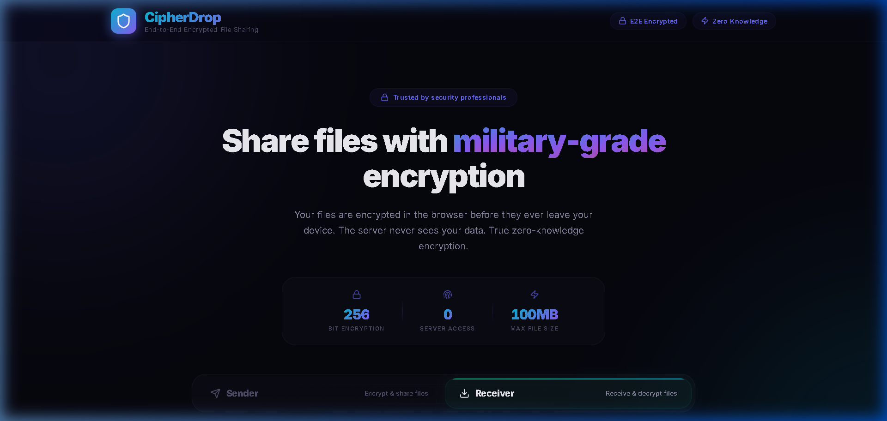

This report is formatted for direct print or PDF export.
Secure End-to-End Encrypted File Sharing with Server Relay and WebRTC P2P Mesh
CipherDrop is a secure file sharing platform built with a React frontend and Node.js backend. The application encrypts files in the browser before upload and supports two transmission models: server-relay mode for asynchronous sharing and direct WebRTC peer-to-peer mode for live transfer.
The design follows a zero-knowledge approach. Encryption keys are never sent to the backend in plaintext.
In URL-key mode, keys are stored in URL fragments (the # section), which are not transmitted to servers by browsers.
| File | Purpose |
|---|---|
| client/index.html | Frontend HTML shell and CSP/meta setup. |
| client/src/main.jsx | React root bootstrap and app mounting. |
| client/src/App.jsx | Main application routes and send/receive flows. |
| client/src/utils/crypto.js | Browser-side encryption/decryption and hash verification logic. |
| server/index.js | Express server setup, CORS/rate-limits, Socket.IO signaling, room lifecycle. |
| server/routes/files.js | Upload/download endpoints, metadata storage in Redis, cleanup routines. |
<!doctype html>
<html lang="en">
<head>
<meta charset="UTF-8" />
<meta http-equiv="Content-Security-Policy" content="default-src 'self'; script-src 'self' 'unsafe-inline' 'unsafe-eval'; style-src 'self' 'unsafe-inline' https://fonts.googleapis.com; font-src 'self' https://fonts.gstatic.com; img-src 'self' data:; connect-src 'self' ws: wss: stun: turn: *;">
<link rel="icon" type="image/svg+xml" href="/favicon.svg" />
<meta name="viewport" content="width=device-width, initial-scale=1.0" />
<meta name="description" content="CipherDrop - Share files securely with end-to-end encryption. Server relay or peer-to-peer transfer with AES-256 and SHA-256." />
<link rel="preconnect" href="https://fonts.googleapis.com">
<link rel="preconnect" href="https://fonts.gstatic.com" crossorigin>
<link href="https://fonts.googleapis.com/css2?family=Inter:wght@400;500;600;700;800&family=Outfit:wght@400;500;600;700;800&display=swap" rel="stylesheet">
<title>CipherDrop - E2E Encrypted File Sharing</title>
</head>
<body>
<div id="root"></div>
<script type="module" src="/src/main.jsx"></script>
</body>
</html>import { StrictMode } from 'react'
import { createRoot } from 'react-dom/client'
import './index.css'
import App from './App.jsx'
createRoot(document.getElementById('root')).render(
<StrictMode>
<App />
</StrictMode>,
)function App() {
const [splashDone, setSplashDone] = useState(false);
const handleSplashComplete = useCallback(() => {
setSplashDone(true);
}, []);
return (
<Router>
{!splashDone && <WebsiteStartEffect onComplete={handleSplashComplete} />}
<div className={`app-root ${splashDone ? 'app-visible' : 'app-hidden'}`}>
<Routes>
<Route path="/" element={<HomePage />} />
<Route path="/download/:fileId" element={<DownloadPage />} />
<Route path="/receive/:roomId" element={<ReceivePage />} />
<Route path="/receive" element={<ReceivePage />} />
</Routes>
</div>
</Router>
);
}export async function generateAESKey() {
const key = await crypto.subtle.generateKey(
{ name: 'AES-GCM', length: 256 },
true,
['encrypt', 'decrypt']
);
return key;
}
export async function encryptAES(data, key) {
const iv = crypto.getRandomValues(new Uint8Array(12));
const encrypted = await crypto.subtle.encrypt(
{ name: 'AES-GCM', iv },
key,
data
);
return {
encrypted,
iv: arrayBufferToBase64(iv.buffer)
};
}
export async function encryptFile(file, encryptionType) {
const data = await file.arrayBuffer();
const key = await generateAESKey();
const keyBase64 = await exportKey(key);
const { encrypted, iv } = await encryptAES(data, key);
let sha256Hash = null;
if (encryptionType === 'SHA') {
sha256Hash = await computeSHA256(data);
}
return {
encryptedBlob: new Blob([encrypted]),
keyBase64,
iv,
sha256Hash,
originalName: file.name,
mimeType: file.type,
originalSize: file.size
};
}require('dotenv').config();
const express = require('express');
const http = require('http');
const { Server } = require('socket.io');
const cors = require('cors');
const crypto = require('crypto');
const rateLimit = require('express-rate-limit');
const { router: filesRouter, deleteLocalFile } = require('./routes/files');
const app = express();
const server = http.createServer(app);
const corsOptions = {
origin: function (origin, callback) {
if (!origin || allowedOrigins.indexOf(origin) !== -1) callback(null, true);
else callback(new Error('Not allowed by CORS'));
},
methods: ['GET', 'POST']
};
const io = new Server(server, {
cors: corsOptions,
maxHttpBufferSize: 1e8
});
app.use(cors(corsOptions));
app.use(express.json());
app.use('/api', rateLimit({ windowMs: 15 * 60 * 1000, max: 100 }));
app.use('/api', filesRouter);
const rooms = new Map();
const socketToFiles = new Map();
io.on('connection', (socket) => {
socket.on('create-room', (callback) => {
const roomId = crypto.randomBytes(3).toString('hex').toUpperCase();
rooms.set(roomId, {
sender: socket.id,
receivers: new Set(),
createdAt: new Date(),
unlimited: false
});
socket.join(roomId);
callback({ roomId });
});
socket.on('join-room', (roomId, callback) => {
const room = rooms.get(roomId);
if (!room) return callback({ error: 'Room not found' });
room.receivers.add(socket.id);
socket.join(roomId);
io.to(room.sender).emit('peer-joined', { peerId: socket.id });
callback({ success: true });
});
socket.on('signal-ready', ({ roomId }) => {
const room = rooms.get(roomId);
if (room && room.sender) {
io.to(room.sender).emit('signal-ready', { from: socket.id });
}
});
socket.on('signal-offer', ({ offer, target }) => {
if (target) io.to(target).emit('signal-offer', { offer });
});
socket.on('signal-answer', ({ roomId, answer }) => {
const room = rooms.get(roomId);
if (room && room.sender) {
io.to(room.sender).emit('signal-answer', { from: socket.id, answer });
}
});
socket.on('disconnect', async () => {
if (socketToFiles.has(socket.id)) {
const fileIds = socketToFiles.get(socket.id);
for (const fileId of fileIds) await deleteLocalFile(fileId);
socketToFiles.delete(socket.id);
}
});
});
server.listen(process.env.PORT || 3001);const express = require('express');
const multer = require('multer');
const path = require('path');
const fs = require('fs');
const { v4: uuidv4 } = require('uuid');
const { createClient } = require('redis');
const router = express.Router();
const FILE_SIZE_LIMIT = 100 * 1024 * 1024;
const redisClient = createClient({
url: process.env.REDIS_URL || 'redis://localhost:6379'
});
redisClient.connect();
const upload = multer({
storage: multer.diskStorage({
destination: (req, file, cb) => {
const uploadDir = path.join(__dirname, '..', 'uploads');
if (!fs.existsSync(uploadDir)) fs.mkdirSync(uploadDir, { recursive: true });
cb(null, uploadDir);
},
filename: (req, file, cb) => {
const fileId = uuidv4();
req.fileId = fileId;
cb(null, fileId);
}
}),
limits: { fileSize: FILE_SIZE_LIMIT }
});
router.post('/upload', upload.single('file'), async (req, res) => {
if (!req.file) return res.status(400).json({ error: 'No file uploaded' });
const fileId = req.file.filename;
let expiryMinutes = parseInt(req.body.expiryMinutes) || 1440;
if (expiryMinutes < 1) expiryMinutes = 1;
if (expiryMinutes > 1440) expiryMinutes = 1440;
const metadata = {
id: fileId,
originalName: req.body.originalName || 'unknown',
mimeType: req.body.mimeType || 'application/octet-stream',
size: req.file.size,
encryptionType: req.body.encryptionType || 'AES',
sha256Hash: req.body.sha256Hash || null,
iv: req.body.iv || null,
uploadedAt: new Date().toISOString(),
expiresAt: new Date(Date.now() + expiryMinutes * 60 * 1000).toISOString()
};
await redisClient.set(`file:${fileId}`, JSON.stringify(metadata), {
EX: expiryMinutes * 60
});
res.json({ success: true, fileId });
});
router.get('/download/:id', async (req, res) => {
const fileId = req.params.id;
const data = await redisClient.get(`file:${fileId}`);
if (!data) return res.status(404).json({ error: 'File not found or expired' });
const metadata = JSON.parse(data);
const filePath = path.join(__dirname, '..', 'uploads', fileId);
if (!fs.existsSync(filePath)) return res.status(404).json({ error: 'File not found on disk' });
const safeFilename = encodeURIComponent(metadata.originalName || 'file') + '.enc';
res.setHeader('Content-Type', 'application/octet-stream');
res.setHeader('Content-Disposition', `attachment; filename="${safeFilename}"`);
fs.createReadStream(filePath).pipe(res);
});Note: The report includes the core backend logic. The full implementations remain in server/index.js and server/routes/files.js inside the project.
Below are real output screenshots captured from CipherDrop for both workflows: Server Relay mode and Direct P2P mode.

Encrypted upload flow with share-link generation on sender side.

Receiver interface for secure file retrieval and decryption.

Sender hub view showing real-time peer transfer status.

Receiver screen for direct peer-to-peer file reception and decrypt path.
CipherDrop demonstrates a practical and secure architecture for encrypted file transfer. By combining browser-native cryptography, controlled server-side metadata, and optional direct peer transfer, the system provides strong confidentiality while remaining user-friendly.
This report captures the key implementation files requested: main HTML/entry frontend code, backend server logic, API route behavior, and output image references.